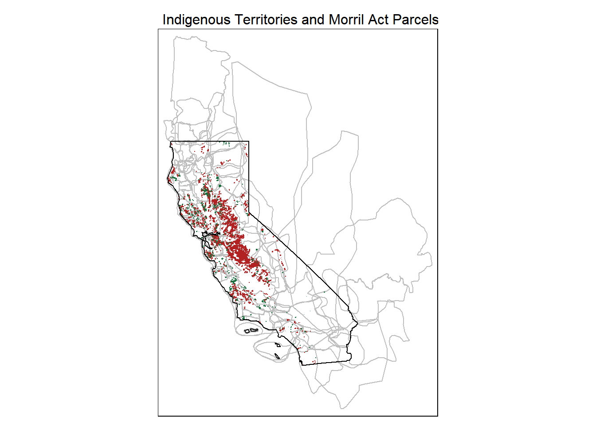

California Morrill Map: Allocations for the UC Endowment by Tribal Group
Andy Lyons
January 30, 2021
Summary
This analysis summarizes the 150,000 acres of land that was transferred from the Federal Government to the State of California under the 1862 Morrill Act to support the establishment of the University of California. The distribution and acreage of land is broken down by the Native American tribal groups from whom the land had be seized.
Data sources and references:
- Lee, R. 2020. How we investigated the land-grant university system. High Country News.
- Morrill Act Parcels: https://github.com/HCNData/landgrabu-data (processing script)
- Indigenous Territories layer: https://native-land.ca/ (processing script)
- Interactive web map: http://bit.ly/ca-morrill-map
1. Load Packages
library(dplyr)
library(tmap)
library(DT)
library(leaflet)
library(sf)
library(lubridate)
library(leaflet.providers)
library(leaflet.extras)2. Import the data
Load the Morrill Act parcels for California:
data_dir <- "./data"
## Import the data and delete duplicate rows (same geometry + attributes)
hcnparc_ca_sf <- sf::st_read(file.path(data_dir, "hcnparc_loc_ca.geojson"), quiet = TRUE) %>%
distinct(across())
Load the indigenous territories that intersect California (data source):
territories_ca_fn <- file.path(data_dir, "territories_ca.geojson")
## Import the polygons and transform the to Lat-Long NAD83 (to match the parcels)
territories_ca_sf <- sf::st_read(territories_ca_fn, quiet = TRUE) %>%
st_transform(4269)
Double-check the data by mapping the parcels and territories together:
cabnd_sf <- sf::st_read(file.path(data_dir, "ca_bnd.geojson"), quiet = TRUE)
tm_shape(territories_ca_sf) +
tm_borders(col = "gray") +
tm_shape(hcnparc_ca_sf) +
tm_polygons(col = "#B22222", border.col = "#B22222") +
tm_shape(hcnparc_ca_sf %>% filter(LG_State == "CA")) +
tm_polygons(col = "#196F3D", border.col = "#196F3D") +
tm_shape(cabnd_sf) +
tm_borders(col = "black", lwd = 1) +
tm_layout(main.title = "Indigenous Territories and Morril Act Parcels in CA",
main.title.size = 0.8)
3. Tabulate Parcels by Tribe
Here we summarize the number and acreage of parcels that were claimed by agents of the State of California to establish UC according to the original occupants. Note that due to overlap between Indigenous Territories, some parcels are double-counted in this table.
## Pull out parcels whose sale went to the State of CA, adding a unique id for the join
uc_prcl_sf <- hcnparc_ca_sf %>%
filter(LG_State == "CA") %>%
mutate(unique_id = 1:n())
## Do a spatial join
uc_prcl_ge_sf <- uc_prcl_sf %>% ## 4269
st_join(territories_ca_sf)
## Compute the number and acreage of parcels for each Tribe
tribal_summary_tbl <- uc_prcl_ge_sf %>%
st_drop_geometry() %>%
group_by(Name) %>%
summarise(num_parcels = n(), acreage = sum(Acres), .groups = "drop_last")
DT::datatable(tribal_summary_tbl %>%
filter(!is.na(Name)),
class = 'row-border stripe hover compact',
colnames = c("Tribe", "Number Parcels", "Acreage"),
width = 500,
rownames = T,
options = list(autoWidth = TRUE,
paging = FALSE,
searching = FALSE,
info = FALSE)) %>%
formatRound(columns = "acreage", digits = 0) 4. Explore the Map
The map below shows the parcels of public (federal) land claimed by the State of California under the Morrill Act to support the establishment of UC. Click on a parcel to view more info about it.
## Construct the names of the tribes for each parcel
uc_prcl_tribes_tbl <- uc_prcl_ge_sf %>%
st_drop_geometry() %>%
select(unique_id, Name) %>%
group_by(unique_id) %>%
summarise(tribes = paste(Name, collapse = "; "), .groups = "drop_last")
## Add the Tribes column to uc_prcl_sf
uc_prcl_tribes_sf <- uc_prcl_sf %>%
left_join(uc_prcl_tribes_tbl, by = "unique_id")
## Prepare a layer for leaflet
uc_prcl_ge_pdt_sf <- uc_prcl_tribes_sf %>%
st_transform(4326) %>%
st_zm() %>%
mutate(dp_year = as.integer(substr(Date_Patent,1,4)),
dp_month = as.integer(substr(Date_Patent,5,6)),
dp_day = as.integer(substr(Date_Patent,7,8))) %>%
mutate(dp_dt = make_date(dp_year, dp_month, dp_day)) %>%
mutate(prcl_popup = paste0("<p><b>Patentee:</b> ", Patentees, "</p>",
"<p><b>Beneficiary:</b> ", University, "<br/>",
"<b>Date:</b> ", format(dp_dt, "%d %B, %Y"), "<br/>",
"<b>Acres:</b> ", round(Acres, 1), "<br/>",
"<b>Land Desc:</b> ", MTRSA_LG, "<br/>",
"<b>Tribal territory(s):</b> ", tribes, "<br/>",
"<b>Source document:</b> <a href='", Parcel_Link, "'>GLO</a></p>")) %>%
select(prcl_popup)
## Create the leaflet object
m <- leaflet(uc_prcl_ge_pdt_sf) %>%
addProviderTiles("Esri.WorldGrayCanvas", group = "Gray") %>%
addTiles(group = "OpenStreetMap") %>%
addProviderTiles("Esri.WorldImagery", group="Satellite") %>%
addPolygons(data = territories_ca_sf %>% st_transform(4326),
fillColor = ~ color, stroke = FALSE,
group = "Indigenous Territories", popup = ~ Name) %>%
addPolygons(popup = ~ prcl_popup, weight = 1) %>%
addPolylines(data = cabnd_sf %>% st_transform(4326),
weight = 2, color = "#111") %>%
addLayersControl(baseGroups = c("Grayscale", "OpenStreetMap", "Satellite"),
overlayGroups = c("Indigenous Territories"),
options = layersControlOptions(collapsed = FALSE)) %>%
setView(-120.4, 37.4, zoom = 6)
## Render the leaflet object
m5. A Morrill Act Land Acknowledgment
The statement below aims to be a more inclusive Land Acknowledgment by acknowledging the role the 1862 Morrill Act played in transforming land that had been seized from Native Americans through centuries of violent occupation by Spaniards, Mexicans, and Euro-Americans, into an endowment for the nascent University of California.
The University of California was established in part with the proceeds from land seized from the ’Amuwu, Achumawi, Acjachemen (Juaneño), Awaswas, Cahuilla, Central Pomo, Chalon, Chochenyo, Chumash, Coast Yuki, Cupeño, Eastern Pomo, Esselen, Graton Rancheria, Hul Kuhk’u, Ineseño, Karkin, Kashaya, Kawaiisu, Kitanemuk, Kizh, Koyom:k’awi (Konkow), Kumeyaay, Kuyam, Lassik, Mattole, Me-Wuk (Bay Miwok), Me-Wuk (Central Sierra Miwok), Me-Wuk (Coast Miwok), Me-Wuk (Lake Miwok), Me-Wuk (Northern Sierra Miwok), Me-Wuk (Southern Sierra Miwok), Mechoopda, Micqanaqa’n, Miwkoʔ Waaliʔ, Modoc, Mountain Maidu, Muwekma, Newe (Western Shoshone), Nisenan, Nomlaki, Nongatl, Northeastern Pomo, Northern Pomo, Northern Yukian, Numu (Northern Paiute), Nuwuvi (Southern Paiute), Nüwüwü (Chemehuevi), Obispeño, Ohlone, Patwin, Payómkawichum (Luiseño), Pit River, Popeloutchom (Amah Mutsun), Ramaytush, Rumsen, Salinan, Shigom, Shmuwich (Barbareño), Sinkyone, Southeastern Pomo, Southern Pomo, Tamyen, Tongva, Tübatulabal, Wappo, Wašišiw Ɂítdeh (Washoe), Western Mono/Monache, Wintʰu• Po•m (Northern Wintu), Wiyot, Yana, Yokuts, and Yuhaviatam/Maarenga’yam (Serrano) tribes. Details.
Please email for questions and feedback.
![]()